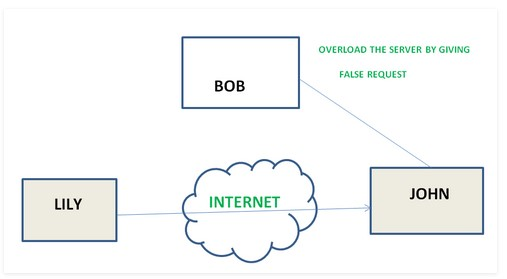
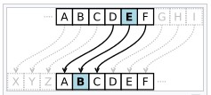
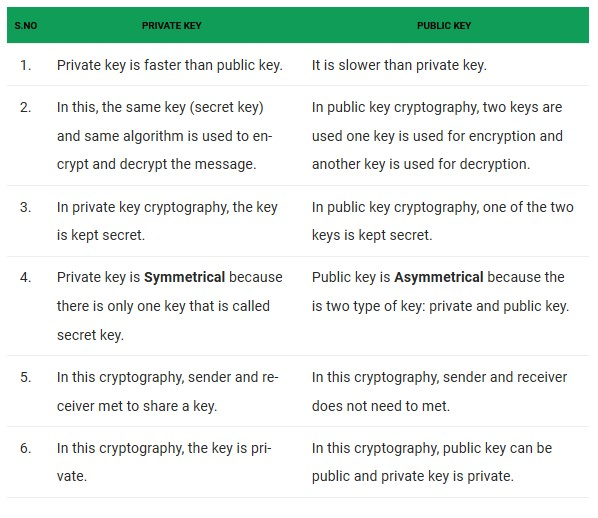

Network security consists of the policies and practices adopted to prevent and monitor unauthorized access, misuse, modification, or denial of a computer network and network-accessible resources. Network security involves the authorization of access to data in a network, which is controlled by the network administrator.
Users choose or are assigned an ID and password or other authenticating information that allows them access to information and programs within their authority. Network security covers a variety of computer networks, both public and private, that are used in everyday jobs; conducting transactions and communications among businesses, government agencies and individuals. Networks can be private, such as within a company, and others which might be open to public access.
Network security is involved in organizations, enterprises, and other types of institutions. It does as its title explains: it secures the network, as well as protecting and overseeing operations being done. The most common and simple way of protecting a network resource is by assigning it a unique name and a corresponding password.
Networks are subject to attacks from malicious sources. Attacks can be from two categories: "Passive" when a network intruder intercepts data traveling through the network,
and "Active" in which an intruder initiates commands to disrupt the network's normal operation or to conduct reconnaissance and lateral movement to find and gain access to assets available via the network.
Types of passive attacks iclude
Types of active attacks include
Masquerade – attacks takes place when one entity pretends to be different entity.
Repudiation – this attack is done by either sender or receiver. The sender or receiver can deny later that he/she has send or receive a message.
For example, customer ask his Bank “To transfer an amount to someone” and later on the sender(customer) deny that he had made such a request. This is repudiation.
Denial of Service – it prevents normal use of communication facilities. This attack may have a specific target. For example, an entity may suppress all messages directed to a particular destination.

Another form of service denial is the disruption of an entire network wither by disabling the network or by overloading it by messages so as to degrade performance.
IP Spoofing- is a technique used to gain unauthorized access to machines, whereby an attacker illicitly impersonates another machine by manipulating IP packets.
IP Spoofing involves modifying the packet header with a forged (spoofed) source IP address, a checksum, and the order value.
Phishing- is the fraudulent attempt to obtain sensitive information such as usernames, passwords and credit card details by disguising oneself as a trustworthy entity in an electronic communication.
Typically carried out by email spoofing or instant messaging, it often directs users to enter personal information at a fake website which matches the look and feel of the legitimate site.
Cryptography: is a method of protecting information and communications through the use of codes so that only those for whom the information is intended can read and process it. The pre-fix "crypt" means "hidden" and the suffix "graphy" stands for "writing." In cryptography, a Caesar cipher is one of the simplest and most widely known encryption techniques.
It is a type of substitution cipher in which each letter in the plaintext is replaced by a letter some fixed number of positions down the alphabet. For example, with a left shift of 3 i.e., D would be replaced by A, E would become B, and so on. The method is named after Julius Caesar, who used it in his private correspondence.

caser cipher

The table above shows the difference between private key and public key